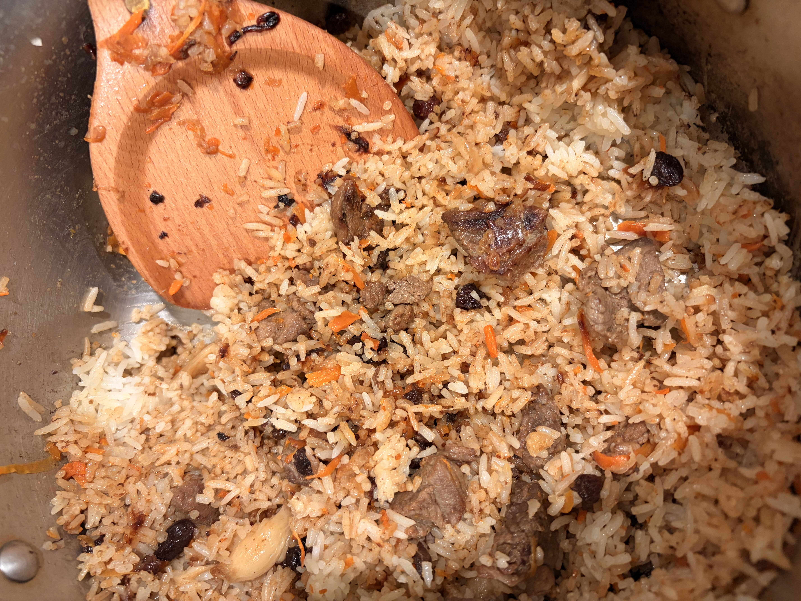

Outside of class, one of my favorite things to do is cook plov, a rice dish from Central Asia made with meat, carrots, onions, and spices. It takes time and patience, but sharing it with friends and family makes it worth it.

| Ingredient | Why It Matters |
|---|---|
| Rice | The base of the dish |
| Lamb or beef | Gives the plov its rich flavor. Make sure it's fatty. I prefer lamb. |
| Carrots | Adds sweetness and color |
| Cumin | The signature spice |
Learn more about plov and other pilaf dishes, or go back to my homepage.